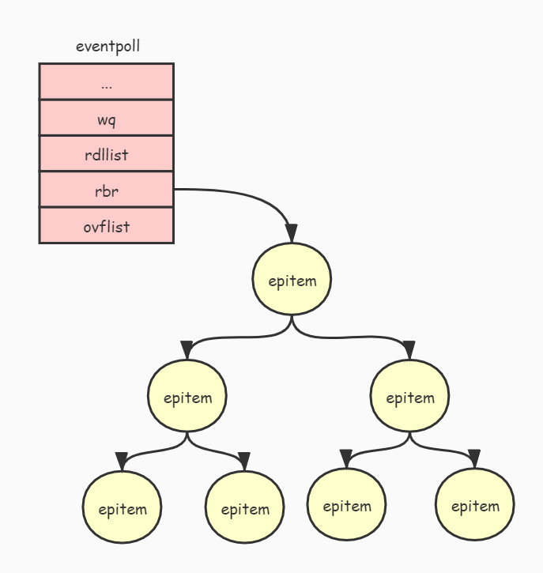

<!DOCTYPE html>
<html>
<head><meta name="generator" content="Hexo 3.9.0">
  <meta charset="utf-8">
  
  <title>Epoll源码分析 | 东写西读</title>
  <meta name="viewport" content="width=device-width, initial-scale=1, maximum-scale=1">
  <meta name="description" content="epoll 是Linux平台下的一种特有的多路复用IO实现方式，是管理TCP的组件，与传统的 select 相比，epoll 在性能上有很大的提升。">
<meta property="og:type" content="article">
<meta property="og:title" content="Epoll源码分析">
<meta property="og:url" content="http://yanwuyang.github.io/2022/04/13/Epoll源码分析/index.html">
<meta property="og:site_name" content="东写西读">
<meta property="og:description" content="epoll 是Linux平台下的一种特有的多路复用IO实现方式，是管理TCP的组件，与传统的 select 相比，epoll 在性能上有很大的提升。">
<meta property="og:locale" content="zh-CN">
<meta property="og:image" content="http://yanwuyang.github.io/2022/04/13/Epoll源码分析/008eGmZEly1gpc5c1gib3j30j30k5q4a.jpg">
<meta property="og:image" content="http://yanwuyang.github.io/2022/04/13/Epoll源码分析/008eGmZEly1gpc5cdhrr0j310f0u0djf.jpg">
<meta property="og:updated_time" content="2022-04-13T01:04:33.292Z">
<meta name="twitter:card" content="summary">
<meta name="twitter:title" content="Epoll源码分析">
<meta name="twitter:description" content="epoll 是Linux平台下的一种特有的多路复用IO实现方式，是管理TCP的组件，与传统的 select 相比，epoll 在性能上有很大的提升。">
<meta name="twitter:image" content="http://yanwuyang.github.io/2022/04/13/Epoll源码分析/008eGmZEly1gpc5c1gib3j30j30k5q4a.jpg">
  
  
    <link rel="icon" href="/favicon.ico">
  
  
    <link href="/css/css.css" rel="stylesheet" type="text/css">
  
  <link rel="stylesheet" href="/css/style.css">
  

</head>
</html>
<body>
  <div id="container">
    <div id="wrap">
      <header id="header">
  <div id="banner"></div>
  <div id="header-outer" class="outer">
    <div id="header-title" class="inner">
      <h1 id="logo-wrap">
        <a href="/" id="logo">东写西读</a>
      </h1>
      
        <h2 id="subtitle-wrap">
          <a href="/" id="subtitle">实践是最好的成长，发表是最好的记忆</a>
        </h2>
      
    </div>
    <div id="header-inner" class="inner">
      <nav id="main-nav">
        <a id="main-nav-toggle" class="nav-icon"></a>
        
          <a class="main-nav-link" href="/">首页</a>
        
          <a class="main-nav-link" href="/archives">文章</a>
        
          <a class="main-nav-link" href="/about">关于</a>
        
      </nav>
      <nav id="sub-nav">
        
        <a id="nav-search-btn" class="nav-icon" title="搜索"></a>
      </nav>
      <div id="search-form-wrap">
	    
           <form action="//google.com/search" method="get" accept-charset="UTF-8" class="search-form"><input type="search" name="q" class="search-form-input" placeholder="Search"><button type="submit" class="search-form-submit">&#xF002;</button><input type="hidden" name="sitesearch" value="http://yanwuyang.github.io"></form>
	    
      </div>
    </div>
  </div>
</header>
      <div class="outer">
        <section id="main"><article id="post-Epoll源码分析" class="article article-type-post" itemscope itemprop="blogPost">
  <div class="article-meta">
    <a href="/2022/04/13/Epoll源码分析/" class="article-date">
  <time datetime="2022-04-12T16:00:00.000Z" itemprop="datePublished">2022-04-13</time>
</a>
    
  <div class="article-category">
    <a class="article-category-link" href="/categories/Linux/">Linux</a>
  </div>

  </div>
  <div class="article-inner">
    
    
      <header class="article-header">
        
  
    <h1 class="article-title" itemprop="name">
      Epoll源码分析
    </h1>
  

      </header>
    
    <div class="article-entry" itemprop="articleBody">
      
		<!-- Table of Contents -->
		
		<div id="toc" class="toc-article">
		<strong class="toc-title">文章目录</strong>
		<ol class="toc"><li class="toc-item toc-level-2"><a class="toc-link" href="#epoll-的创建"><span class="toc-number">1.</span> <span class="toc-text">epoll 的创建</span></a></li><li class="toc-item toc-level-2"><a class="toc-link" href="#向-epoll-添加文件句柄"><span class="toc-number">2.</span> <span class="toc-text">向 epoll 添加文件句柄</span></a></li><li class="toc-item toc-level-2"><a class="toc-link" href="#等待被监听的文件状态发生改变"><span class="toc-number">3.</span> <span class="toc-text">等待被监听的文件状态发生改变</span></a></li></ol>
		</div>
		
        <p>epoll 是Linux平台下的一种特有的多路复用IO实现方式，是管理TCP的组件，与传统的 select 相比，epoll 在性能上有很大的提升。<br><a id="more"></a></p>
<h2 id="epoll-的创建"><a href="#epoll-的创建" class="headerlink" title="epoll 的创建"></a>epoll 的创建</h2><p>要使用 epoll 首先需要调用 epoll_create() 函数创建一个 epoll 的句柄，epoll_create() 函数定义如下：<br><figure class="highlight c"><table><tr><td class="gutter"><pre><span class="line">1</span><br></pre></td><td class="code"><pre><span class="line"><span class="function"><span class="keyword">int</span> <span class="title">epoll_create</span><span class="params">(<span class="keyword">int</span> size)</span></span>;</span><br></pre></td></tr></table></figure></p>
<p>参数 size 是由于历史原因遗留下来的，现在不起作用。当用户调用 epoll_create() 函数时，会进入到内核空间，并且调用 sys_epoll_create() 内核函数来创建 epoll 句柄，sys_epoll_create() 函数代码如下：<br><figure class="highlight c"><table><tr><td class="gutter"><pre><span class="line">1</span><br><span class="line">2</span><br><span class="line">3</span><br><span class="line">4</span><br><span class="line">5</span><br><span class="line">6</span><br><span class="line">7</span><br><span class="line">8</span><br><span class="line">9</span><br><span class="line">10</span><br><span class="line">11</span><br><span class="line">12</span><br><span class="line">13</span><br><span class="line">14</span><br><span class="line">15</span><br><span class="line">16</span><br><span class="line">17</span><br><span class="line">18</span><br></pre></td><td class="code"><pre><span class="line"><span class="function">asmlinkage <span class="keyword">long</span> <span class="title">sys_epoll_create</span><span class="params">(<span class="keyword">int</span> size)</span></span></span><br><span class="line"><span class="function"></span>&#123;</span><br><span class="line">    <span class="keyword">int</span> error, fd = <span class="number">-1</span>;</span><br><span class="line">    <span class="class"><span class="keyword">struct</span> <span class="title">eventpoll</span> *<span class="title">ep</span>;</span></span><br><span class="line"></span><br><span class="line">    error = -EINVAL;</span><br><span class="line">    <span class="keyword">if</span> (size &lt;= <span class="number">0</span> || (error = ep_alloc(&amp;ep)) &lt; <span class="number">0</span>) &#123;</span><br><span class="line">        fd = error;</span><br><span class="line">        <span class="keyword">goto</span> error_return;</span><br><span class="line">    &#125;</span><br><span class="line"></span><br><span class="line">    fd = anon_inode_getfd(<span class="string">"[eventpoll]"</span>, &amp;eventpoll_fops, ep);</span><br><span class="line">    <span class="keyword">if</span> (fd &lt; <span class="number">0</span>)</span><br><span class="line">        ep_free(ep);</span><br><span class="line"></span><br><span class="line">error_return:</span><br><span class="line">    <span class="keyword">return</span> fd;</span><br><span class="line">&#125;</span><br></pre></td></tr></table></figure></p>
<p>sys_epoll_create() 主要做两件事情：</p>
<ul>
<li>1、调用 ep_alloc() 函数创建并初始化一个 eventpoll 对象。</li>
<li>2、调用 anon_inode_getfd() 函数把 eventpoll 对象映射到一个文件句柄，并返回这个文件句柄。</li>
</ul>
<p>我们先来看看 eventpoll 这个对象，eventpoll 对象用于管理 epoll 监听的文件列表，其定义如下：</p>
<figure class="highlight c"><table><tr><td class="gutter"><pre><span class="line">1</span><br><span class="line">2</span><br><span class="line">3</span><br><span class="line">4</span><br><span class="line">5</span><br><span class="line">6</span><br><span class="line">7</span><br><span class="line">8</span><br></pre></td><td class="code"><pre><span class="line"><span class="class"><span class="keyword">struct</span> <span class="title">eventpoll</span> &#123;</span></span><br><span class="line">    ...</span><br><span class="line">    <span class="keyword">wait_queue_head_t</span> wq;</span><br><span class="line">    ...</span><br><span class="line">    <span class="class"><span class="keyword">struct</span> <span class="title">list_head</span> <span class="title">rdllist</span>;</span></span><br><span class="line">    <span class="class"><span class="keyword">struct</span> <span class="title">rb_root</span> <span class="title">rbr</span>;</span></span><br><span class="line">    ...</span><br><span class="line">&#125;;</span><br></pre></td></tr></table></figure>
<p>先来说明一下 eventpoll 对象各个成员的作用：</p>
<ul>
<li>wq: 等待队列，当调用 epoll_wait(fd) 时会把进程添加到 eventpoll 对象的 wq 等待队列中。</li>
<li>rdllist: 保存已经就绪的文件列表。</li>
<li>rbr: 使用红黑树来管理所有被监听的文件。</li>
</ul>
<p>下图展示了 eventpoll 对象与被监听的文件关系：<br></p>
<p>由于被监听的文件是通过 epitem 对象来管理的，所以上图中的节点都是以 epitem 对象的形式存在的。为什么要使用红黑树来管理被监听的文件呢？这是为了能够通过文件句柄快速查找到其对应的 epitem 对象。红黑树是一种平衡二叉树，如果对其不了解可以查阅相关的文档。</p>
<h2 id="向-epoll-添加文件句柄"><a href="#向-epoll-添加文件句柄" class="headerlink" title="向 epoll 添加文件句柄"></a>向 epoll 添加文件句柄</h2><p>前面介绍了怎么创建 epoll，接下来介绍一下怎么向 epoll 添加要监听的文件。</p>
<p>通过调用 epoll_ctl() 函数可以向 epoll 添加要监听的文件，其原型如下：<br><figure class="highlight c"><table><tr><td class="gutter"><pre><span class="line">1</span><br></pre></td><td class="code"><pre><span class="line"><span class="function"><span class="keyword">long</span> <span class="title">epoll_ctl</span><span class="params">(<span class="keyword">int</span> epfd, <span class="keyword">int</span> op, <span class="keyword">int</span> fd,struct epoll_event *event)</span></span>;</span><br></pre></td></tr></table></figure></p>
<p>下面说明一下各个参数的作用：</p>
<pre><code>epfd: 通过调用 epoll_create() 函数返回的文件句柄。
op: 要进行的操作，有3个选项：
    EPOLL_CTL_ADD：表示要进行添加操作。
    EPOLL_CTL_DEL：表示要进行删除操作。
    EPOLL_CTL_MOD：表示要进行修改操作。
fd: 要监听的文件句柄。
event: 告诉内核需要监听什么事。其定义如下：

struct epoll_event {
    __uint32_t events;  /* Epoll events */
    epoll_data_t data;  /* User data variable */
};

events 可以是以下几个宏的集合：

EPOLLIN ：表示对应的文件句柄可以读（包括对端SOCKET正常关闭）；
EPOLLOUT：表示对应的文件句柄可以写；
EPOLLPRI：表示对应的文件句柄有紧急的数据可读（这里应该表示有带外数据到来）；
EPOLLERR：表示对应的文件句柄发生错误；
EPOLLHUP：表示对应的文件句柄被挂断；
EPOLLET：将EPOLL设为边缘触发(Edge Triggered)模式，这是相对于水平触发(Level Triggered)来说的。
EPOLLONESHOT：只监听一次事件，当监听完这次事件之后，如果还需要继续监听这个socket的话，需要再次把这个socket加入到EPOLL队列里。

data 用来保存用户自定义数据。
</code></pre><p>epoll_ctl() 函数会调用 sys_epoll_ctl() 内核函数，sys_epoll_ctl() 内核函数的实现如下：<br><figure class="highlight c"><table><tr><td class="gutter"><pre><span class="line">1</span><br><span class="line">2</span><br><span class="line">3</span><br><span class="line">4</span><br><span class="line">5</span><br><span class="line">6</span><br><span class="line">7</span><br><span class="line">8</span><br><span class="line">9</span><br><span class="line">10</span><br><span class="line">11</span><br><span class="line">12</span><br><span class="line">13</span><br><span class="line">14</span><br><span class="line">15</span><br><span class="line">16</span><br><span class="line">17</span><br><span class="line">18</span><br><span class="line">19</span><br><span class="line">20</span><br><span class="line">21</span><br><span class="line">22</span><br><span class="line">23</span><br><span class="line">24</span><br><span class="line">25</span><br><span class="line">26</span><br><span class="line">27</span><br><span class="line">28</span><br><span class="line">29</span><br><span class="line">30</span><br></pre></td><td class="code"><pre><span class="line"><span class="function">asmlinkage <span class="keyword">long</span> <span class="title">sys_epoll_ctl</span><span class="params">(<span class="keyword">int</span> epfd, <span class="keyword">int</span> op, </span></span></span><br><span class="line"><span class="function"><span class="params">    <span class="keyword">int</span> fd, struct epoll_event __user *event)</span></span></span><br><span class="line"><span class="function"></span>&#123;</span><br><span class="line">    ...</span><br><span class="line">    file = fget(epfd);</span><br><span class="line">    tfile = fget(fd);</span><br><span class="line">    ...</span><br><span class="line">    ep = file-&gt;private_data;</span><br><span class="line"></span><br><span class="line">    mutex_lock(&amp;ep-&gt;mtx);</span><br><span class="line"></span><br><span class="line">    epi = ep_find(ep, tfile, fd);</span><br><span class="line"></span><br><span class="line">    error = -EINVAL;</span><br><span class="line">    <span class="keyword">switch</span> (op) &#123;</span><br><span class="line">    <span class="keyword">case</span> EPOLL_CTL_ADD:</span><br><span class="line">        <span class="keyword">if</span> (!epi) &#123;</span><br><span class="line">            epds.events |= POLLERR | POLLHUP;</span><br><span class="line"></span><br><span class="line">            error = ep_insert(ep, &amp;epds, tfile, fd);</span><br><span class="line">        &#125; <span class="keyword">else</span></span><br><span class="line">            error = -EEXIST;</span><br><span class="line">        <span class="keyword">break</span>;</span><br><span class="line">    ...</span><br><span class="line">    &#125;</span><br><span class="line">    mutex_unlock(&amp;ep-&gt;mtx);</span><br><span class="line"></span><br><span class="line">    ...</span><br><span class="line">    <span class="keyword">return</span> error;</span><br><span class="line">&#125;</span><br></pre></td></tr></table></figure></p>
<p>sys_epoll_ctl() 函数会根据传入不同 op 的值来进行不同操作，比如传入 EPOLL_CTL_ADD 表示要进行添加操作，那么就调用 ep_insert() 函数来进行添加操作。</p>
<p>我们继续来分析添加操作 ep_insert() 函数的实现：</p>
<figure class="highlight c"><table><tr><td class="gutter"><pre><span class="line">1</span><br><span class="line">2</span><br><span class="line">3</span><br><span class="line">4</span><br><span class="line">5</span><br><span class="line">6</span><br><span class="line">7</span><br><span class="line">8</span><br><span class="line">9</span><br><span class="line">10</span><br><span class="line">11</span><br><span class="line">12</span><br><span class="line">13</span><br><span class="line">14</span><br><span class="line">15</span><br><span class="line">16</span><br><span class="line">17</span><br><span class="line">18</span><br><span class="line">19</span><br><span class="line">20</span><br><span class="line">21</span><br><span class="line">22</span><br><span class="line">23</span><br><span class="line">24</span><br><span class="line">25</span><br><span class="line">26</span><br><span class="line">27</span><br><span class="line">28</span><br><span class="line">29</span><br><span class="line">30</span><br></pre></td><td class="code"><pre><span class="line"><span class="function">asmlinkage <span class="keyword">long</span> <span class="title">sys_epoll_ctl</span><span class="params">(<span class="keyword">int</span> epfd, <span class="keyword">int</span> op, </span></span></span><br><span class="line"><span class="function"><span class="params">    <span class="keyword">int</span> fd, struct epoll_event __user *event)</span></span></span><br><span class="line"><span class="function"></span>&#123;</span><br><span class="line">    ...</span><br><span class="line">    file = fget(epfd);</span><br><span class="line">    tfile = fget(fd);</span><br><span class="line">    ...</span><br><span class="line">    ep = file-&gt;private_data;</span><br><span class="line"></span><br><span class="line">    mutex_lock(&amp;ep-&gt;mtx);</span><br><span class="line"></span><br><span class="line">    epi = ep_find(ep, tfile, fd);</span><br><span class="line"></span><br><span class="line">    error = -EINVAL;</span><br><span class="line">    <span class="keyword">switch</span> (op) &#123;</span><br><span class="line">    <span class="keyword">case</span> EPOLL_CTL_ADD:</span><br><span class="line">        <span class="keyword">if</span> (!epi) &#123;</span><br><span class="line">            epds.events |= POLLERR | POLLHUP;</span><br><span class="line"></span><br><span class="line">            error = ep_insert(ep, &amp;epds, tfile, fd);</span><br><span class="line">        &#125; <span class="keyword">else</span></span><br><span class="line">            error = -EEXIST;</span><br><span class="line">        <span class="keyword">break</span>;</span><br><span class="line">    ...</span><br><span class="line">    &#125;</span><br><span class="line">    mutex_unlock(&amp;ep-&gt;mtx);</span><br><span class="line"></span><br><span class="line">    ...</span><br><span class="line">    <span class="keyword">return</span> error;</span><br><span class="line">&#125;</span><br></pre></td></tr></table></figure>
<p>sys_epoll_ctl() 函数会根据传入不同 op 的值来进行不同操作，比如传入 EPOLL_CTL_ADD 表示要进行添加操作，那么就调用 ep_insert() 函数来进行添加操作。</p>
<p>我们继续来分析添加操作 ep_insert() 函数的实现：<br><figure class="highlight c"><table><tr><td class="gutter"><pre><span class="line">1</span><br><span class="line">2</span><br><span class="line">3</span><br><span class="line">4</span><br><span class="line">5</span><br><span class="line">6</span><br><span class="line">7</span><br><span class="line">8</span><br><span class="line">9</span><br><span class="line">10</span><br><span class="line">11</span><br><span class="line">12</span><br><span class="line">13</span><br><span class="line">14</span><br><span class="line">15</span><br><span class="line">16</span><br><span class="line">17</span><br><span class="line">18</span><br><span class="line">19</span><br><span class="line">20</span><br><span class="line">21</span><br><span class="line">22</span><br><span class="line">23</span><br><span class="line">24</span><br><span class="line">25</span><br><span class="line">26</span><br><span class="line">27</span><br><span class="line">28</span><br><span class="line">29</span><br><span class="line">30</span><br><span class="line">31</span><br><span class="line">32</span><br><span class="line">33</span><br><span class="line">34</span><br><span class="line">35</span><br><span class="line">36</span><br><span class="line">37</span><br><span class="line">38</span><br><span class="line">39</span><br><span class="line">40</span><br><span class="line">41</span><br><span class="line">42</span><br><span class="line">43</span><br><span class="line">44</span><br><span class="line">45</span><br><span class="line">46</span><br><span class="line">47</span><br></pre></td><td class="code"><pre><span class="line"><span class="function"><span class="keyword">static</span> <span class="keyword">int</span> <span class="title">ep_insert</span><span class="params">(struct eventpoll *ep, struct epoll_event *event,</span></span></span><br><span class="line"><span class="function"><span class="params">             struct file *tfile, <span class="keyword">int</span> fd)</span></span></span><br><span class="line"><span class="function"></span>&#123;</span><br><span class="line">    ...</span><br><span class="line">    error = -ENOMEM;</span><br><span class="line">    <span class="comment">// 申请一个 epitem 对象</span></span><br><span class="line">    <span class="keyword">if</span> (!(epi = kmem_cache_alloc(epi_cache, GFP_KERNEL)))</span><br><span class="line">        <span class="keyword">goto</span> error_return;</span><br><span class="line"></span><br><span class="line">    <span class="comment">// 初始化 epitem 对象</span></span><br><span class="line">    INIT_LIST_HEAD(&amp;epi-&gt;rdllink);</span><br><span class="line">    INIT_LIST_HEAD(&amp;epi-&gt;fllink);</span><br><span class="line">    INIT_LIST_HEAD(&amp;epi-&gt;pwqlist);</span><br><span class="line">    epi-&gt;ep = ep;</span><br><span class="line">    ep_set_ffd(&amp;epi-&gt;ffd, tfile, fd);</span><br><span class="line">    epi-&gt;event = *event;</span><br><span class="line">    epi-&gt;nwait = <span class="number">0</span>;</span><br><span class="line">    epi-&gt;next = EP_UNACTIVE_PTR;</span><br><span class="line"></span><br><span class="line">    epq.epi = epi;</span><br><span class="line">    <span class="comment">// 等价于: epq.pt-&gt;qproc = ep_ptable_queue_proc</span></span><br><span class="line">    init_poll_funcptr(&amp;epq.pt, ep_ptable_queue_proc);</span><br><span class="line"></span><br><span class="line">    <span class="comment">// 调用被监听文件的 poll 接口. </span></span><br><span class="line">    <span class="comment">// 这个接口又各自文件系统实现, 如socket的话, 那么这个接口就是 tcp_poll().</span></span><br><span class="line">    revents = tfile-&gt;f_op-&gt;poll(tfile, &amp;epq.pt);</span><br><span class="line">    ...</span><br><span class="line">    ep_rbtree_insert(ep, epi); <span class="comment">// 把 epitem 对象添加到epoll的红黑树中进行管理</span></span><br><span class="line"></span><br><span class="line">    spin_lock_irqsave(&amp;ep-&gt;lock, flags);</span><br><span class="line"></span><br><span class="line">    <span class="comment">// 如果被监听的文件已经可以进行对应的读写操作</span></span><br><span class="line">    <span class="comment">// 那么就把文件添加到epoll的就绪队列 rdllink 中, 并且唤醒调用 epoll_wait() 的进程.</span></span><br><span class="line">    <span class="keyword">if</span> ((revents &amp; event-&gt;events) &amp;&amp; !ep_is_linked(&amp;epi-&gt;rdllink)) &#123;</span><br><span class="line">        list_add_tail(&amp;epi-&gt;rdllink, &amp;ep-&gt;rdllist);</span><br><span class="line"></span><br><span class="line">        <span class="keyword">if</span> (waitqueue_active(&amp;ep-&gt;wq))</span><br><span class="line">            wake_up_locked(&amp;ep-&gt;wq);</span><br><span class="line">        <span class="keyword">if</span> (waitqueue_active(&amp;ep-&gt;poll_wait))</span><br><span class="line">            pwake++;</span><br><span class="line">    &#125;</span><br><span class="line"></span><br><span class="line">    spin_unlock_irqrestore(&amp;ep-&gt;lock, flags);</span><br><span class="line">    ...</span><br><span class="line">    <span class="keyword">return</span> <span class="number">0</span>;</span><br><span class="line">    ...</span><br><span class="line">&#125;</span><br></pre></td></tr></table></figure></p>
<p>被监听的文件是通过 epitem 对象进行管理的，也就是说被监听的文件会被封装成 epitem 对象，然后会被添加到 eventpoll 对象的红黑树中进行管理（如上述代码中的 ep_rbtree_insert(ep, epi)）。</p>
<p>tfile-&gt;f_op-&gt;poll(tfile, &amp;epq.pt) 这行代码的作用是调用被监听文件的 poll() 接口，如果被监听的文件是一个socket句柄，那么就会调用 tcp_poll()，我们来看看 tcp_poll() 做了什么操作：<br><figure class="highlight c"><table><tr><td class="gutter"><pre><span class="line">1</span><br><span class="line">2</span><br><span class="line">3</span><br><span class="line">4</span><br><span class="line">5</span><br><span class="line">6</span><br><span class="line">7</span><br><span class="line">8</span><br></pre></td><td class="code"><pre><span class="line"><span class="function"><span class="keyword">unsigned</span> <span class="keyword">int</span> <span class="title">tcp_poll</span><span class="params">(struct file *file, struct socket *sock, poll_table *wait)</span></span></span><br><span class="line"><span class="function"></span>&#123;</span><br><span class="line">    <span class="class"><span class="keyword">struct</span> <span class="title">sock</span> *<span class="title">sk</span> = <span class="title">sock</span>-&gt;<span class="title">sk</span>;</span></span><br><span class="line">    ...</span><br><span class="line">    poll_wait(file, sk-&gt;sk_sleep, wait);</span><br><span class="line">    ...</span><br><span class="line">    <span class="keyword">return</span> mask;</span><br><span class="line">&#125;</span><br></pre></td></tr></table></figure></p>
<p>每个 socket 对象都有个等待队列（waitqueue, ）,用于存放等待 socket 状态更改的进程。</p>
<p>从上述代码可以知道，tcp_poll() 调用了 poll_wait() 函数，而 poll_wait() 最终会调用 ep_ptable_queue_proc() 函数，ep_ptable_queue_proc() 函数实现如下：<br><figure class="highlight c"><table><tr><td class="gutter"><pre><span class="line">1</span><br><span class="line">2</span><br><span class="line">3</span><br><span class="line">4</span><br><span class="line">5</span><br><span class="line">6</span><br><span class="line">7</span><br><span class="line">8</span><br><span class="line">9</span><br><span class="line">10</span><br><span class="line">11</span><br><span class="line">12</span><br><span class="line">13</span><br><span class="line">14</span><br><span class="line">15</span><br><span class="line">16</span><br><span class="line">17</span><br></pre></td><td class="code"><pre><span class="line"><span class="function"><span class="keyword">static</span> <span class="keyword">void</span> <span class="title">ep_ptable_queue_proc</span><span class="params">(struct file *file, </span></span></span><br><span class="line"><span class="function"><span class="params">    <span class="keyword">wait_queue_head_t</span> *whead, poll_table *pt)</span></span></span><br><span class="line"><span class="function"></span>&#123;</span><br><span class="line">    <span class="class"><span class="keyword">struct</span> <span class="title">epitem</span> *<span class="title">epi</span> = <span class="title">ep_item_from_epqueue</span>(<span class="title">pt</span>);</span></span><br><span class="line">    <span class="class"><span class="keyword">struct</span> <span class="title">eppoll_entry</span> *<span class="title">pwq</span>;</span></span><br><span class="line"></span><br><span class="line">    <span class="keyword">if</span> (epi-&gt;nwait &gt;= <span class="number">0</span> &amp;&amp; (pwq = kmem_cache_alloc(pwq_cache, GFP_KERNEL))) &#123;</span><br><span class="line">        init_waitqueue_func_entry(&amp;pwq-&gt;wait, ep_poll_callback);</span><br><span class="line">        pwq-&gt;whead = whead;</span><br><span class="line">        pwq-&gt;base = epi;</span><br><span class="line">        add_wait_queue(whead, &amp;pwq-&gt;wait);</span><br><span class="line">        list_add_tail(&amp;pwq-&gt;llink, &amp;epi-&gt;pwqlist);</span><br><span class="line">        epi-&gt;nwait++;</span><br><span class="line">    &#125; <span class="keyword">else</span> &#123;</span><br><span class="line">        epi-&gt;nwait = <span class="number">-1</span>;</span><br><span class="line">    &#125;</span><br><span class="line">&#125;</span><br></pre></td></tr></table></figure></p>
<p>ep_ptable_queue_proc() 函数主要工作是把当前 epitem 对象添加到 socket 对象的等待队列中，并且设置唤醒函数为 ep_poll_callback()，也就是说，当socket状态发生变化时，会触发调用 ep_poll_callback() 函数。ep_poll_callback() 函数实现如下：<br><figure class="highlight c"><table><tr><td class="gutter"><pre><span class="line">1</span><br><span class="line">2</span><br><span class="line">3</span><br><span class="line">4</span><br><span class="line">5</span><br><span class="line">6</span><br><span class="line">7</span><br><span class="line">8</span><br><span class="line">9</span><br><span class="line">10</span><br><span class="line">11</span><br><span class="line">12</span><br><span class="line">13</span><br></pre></td><td class="code"><pre><span class="line"><span class="function"><span class="keyword">static</span> <span class="keyword">int</span> <span class="title">ep_poll_callback</span><span class="params">(<span class="keyword">wait_queue_t</span> *wait, <span class="keyword">unsigned</span> mode, <span class="keyword">int</span> sync, <span class="keyword">void</span> *key)</span></span></span><br><span class="line"><span class="function"></span>&#123;</span><br><span class="line">    ...</span><br><span class="line">    <span class="comment">// 把就绪的文件添加到就绪队列中</span></span><br><span class="line">    list_add_tail(&amp;epi-&gt;rdllink, &amp;ep-&gt;rdllist);</span><br><span class="line"></span><br><span class="line">is_linked:</span><br><span class="line">    <span class="comment">// 唤醒调用 epoll_wait() 而被阻塞的进程</span></span><br><span class="line">    <span class="keyword">if</span> (waitqueue_active(&amp;ep-&gt;wq))</span><br><span class="line">        wake_up_locked(&amp;ep-&gt;wq);</span><br><span class="line">    ...</span><br><span class="line">    <span class="keyword">return</span> <span class="number">1</span>;</span><br><span class="line">&#125;</span><br></pre></td></tr></table></figure></p>
<p>ep_poll_callback() 函数的主要工作是把就绪的文件添加到 eventepoll 对象的就绪队列中，然后唤醒调用 epoll_wait() 被阻塞的进程。</p>
<h2 id="等待被监听的文件状态发生改变"><a href="#等待被监听的文件状态发生改变" class="headerlink" title="等待被监听的文件状态发生改变"></a>等待被监听的文件状态发生改变</h2><p>把被监听的文件句柄添加到epoll后，就可以通过调用 epoll_wait() 等待被监听的文件状态发生改变。epoll_wait() 调用会阻塞当前进程，当被监听的文件状态发生改变时，epoll_wait() 调用便会返回。</p>
<p>epoll_wait() 系统调用的原型如下：<br><figure class="highlight c"><table><tr><td class="gutter"><pre><span class="line">1</span><br></pre></td><td class="code"><pre><span class="line"><span class="function"><span class="keyword">long</span> <span class="title">epoll_wait</span><span class="params">(<span class="keyword">int</span> epfd, struct epoll_event *events, <span class="keyword">int</span> maxevents, <span class="keyword">int</span> timeout)</span></span>;</span><br></pre></td></tr></table></figure></p>
<p>各个参数的意义：</p>
<pre><code>epfd: 调用 epoll_create() 函数创建的epoll句柄。
events: 用来存放就绪文件列表。
maxevents: events 数组的大小。
timeout: 设置等待的超时时间。
</code></pre><p>epoll_wait() 函数会调用 sys_epoll_wait() 内核函数，而 sys_epoll_wait() 函数最终会调用 ep_poll() 函数，我们来看看 ep_poll() 函数的实现：</p>
<figure class="highlight c"><table><tr><td class="gutter"><pre><span class="line">1</span><br><span class="line">2</span><br><span class="line">3</span><br><span class="line">4</span><br><span class="line">5</span><br><span class="line">6</span><br><span class="line">7</span><br><span class="line">8</span><br><span class="line">9</span><br><span class="line">10</span><br><span class="line">11</span><br><span class="line">12</span><br><span class="line">13</span><br><span class="line">14</span><br><span class="line">15</span><br><span class="line">16</span><br><span class="line">17</span><br><span class="line">18</span><br><span class="line">19</span><br><span class="line">20</span><br><span class="line">21</span><br><span class="line">22</span><br><span class="line">23</span><br><span class="line">24</span><br><span class="line">25</span><br><span class="line">26</span><br><span class="line">27</span><br><span class="line">28</span><br><span class="line">29</span><br><span class="line">30</span><br><span class="line">31</span><br><span class="line">32</span><br><span class="line">33</span><br><span class="line">34</span><br><span class="line">35</span><br><span class="line">36</span><br><span class="line">37</span><br><span class="line">38</span><br><span class="line">39</span><br><span class="line">40</span><br><span class="line">41</span><br><span class="line">42</span><br><span class="line">43</span><br></pre></td><td class="code"><pre><span class="line"><span class="function"><span class="keyword">static</span> <span class="keyword">int</span> <span class="title">ep_poll</span><span class="params">(struct eventpoll *ep, </span></span></span><br><span class="line"><span class="function"><span class="params">    struct epoll_event __user *events, <span class="keyword">int</span> maxevents, <span class="keyword">long</span> timeout)</span></span></span><br><span class="line"><span class="function"></span>&#123;</span><br><span class="line">    ...</span><br><span class="line">    <span class="comment">// 如果就绪文件列表为空</span></span><br><span class="line">    <span class="keyword">if</span> (list_empty(&amp;ep-&gt;rdllist)) &#123;</span><br><span class="line">        <span class="comment">// 把当前进程添加到epoll的等待队列中</span></span><br><span class="line">        init_waitqueue_entry(&amp;wait, current);</span><br><span class="line">        wait.flags |= WQ_FLAG_EXCLUSIVE;</span><br><span class="line">        __add_wait_queue(&amp;ep-&gt;wq, &amp;wait);</span><br><span class="line"></span><br><span class="line">        <span class="keyword">for</span> (;;) &#123;</span><br><span class="line">            set_current_state(TASK_INTERRUPTIBLE); <span class="comment">// 把当前进程设置为睡眠状态</span></span><br><span class="line">            <span class="keyword">if</span> (!list_empty(&amp;ep-&gt;rdllist) || !jtimeout) <span class="comment">// 如果有就绪文件或者超时, 退出循环</span></span><br><span class="line">                <span class="keyword">break</span>;</span><br><span class="line">            <span class="keyword">if</span> (signal_pending(current)) &#123; <span class="comment">// 接收到信号也要退出</span></span><br><span class="line">                res = -EINTR;</span><br><span class="line">                <span class="keyword">break</span>;</span><br><span class="line">            &#125;</span><br><span class="line"></span><br><span class="line">            spin_unlock_irqrestore(&amp;ep-&gt;lock, flags);</span><br><span class="line">            jtimeout = schedule_timeout(jtimeout); <span class="comment">// 让出CPU, 切换到其他进程进行执行</span></span><br><span class="line">            spin_lock_irqsave(&amp;ep-&gt;lock, flags);</span><br><span class="line">        &#125;</span><br><span class="line">        <span class="comment">// 有3种情况会执行到这里:</span></span><br><span class="line">        <span class="comment">// 1. 被监听的文件集合中有就绪的文件</span></span><br><span class="line">        <span class="comment">// 2. 设置了超时时间并且超时了</span></span><br><span class="line">        <span class="comment">// 3. 接收到信号</span></span><br><span class="line">        __remove_wait_queue(&amp;ep-&gt;wq, &amp;wait);</span><br><span class="line"></span><br><span class="line">        set_current_state(TASK_RUNNING);</span><br><span class="line">    &#125;</span><br><span class="line">    <span class="comment">/* 是否有就绪的文件? */</span></span><br><span class="line">    eavail = !list_empty(&amp;ep-&gt;rdllist);</span><br><span class="line"></span><br><span class="line">    spin_unlock_irqrestore(&amp;ep-&gt;lock, flags);</span><br><span class="line"></span><br><span class="line">    <span class="keyword">if</span> (!res &amp;&amp; eavail </span><br><span class="line">        &amp;&amp; !(res = ep_send_events(ep, events, maxevents)) &amp;&amp; jtimeout)</span><br><span class="line">        <span class="keyword">goto</span> retry;</span><br><span class="line"></span><br><span class="line">    <span class="keyword">return</span> res;</span><br><span class="line">&#125;</span><br></pre></td></tr></table></figure>
<p>ep_poll() 函数主要做以下几件事：</p>
<pre><code>判断被监听的文件集合中是否有就绪的文件，如果有就返回。
如果没有就把当前进程添加到epoll的等待队列中，并且进入睡眠。
进程会一直睡眠直到有以下几种情况发生：
    被监听的文件集合中有就绪的文件
    设置了超时时间并且超时了
    接收到信号
如果有就绪的文件，那么就调用 ep_send_events() 函数把就绪文件复制到 events 参数中。
返回就绪文件的个数。
</code></pre><p>最后，我们通过一张图来总结epoll的原理：<br></p>
<p>下面通过文字来描述一下这个过程：</p>
<pre><code>通过调用 epoll_create() 函数创建并初始化一个 eventpoll 对象。
通过调用 epoll_ctl() 函数把被监听的文件句柄 (如socket句柄) 封装成 epitem 对象并且添加到 eventpoll 对象的红黑树中进行管理。
通过调用 epoll_wait() 函数等待被监听的文件状态发生改变。
当被监听的文件状态发生改变时（如socket接收到数据），会把文件句柄对应 epitem 对象添加到 eventpoll 对象的就绪队列 rdllist 中。并且把就绪队列的文件列表复制到 epoll_wait() 函数的 events 参数中。
唤醒调用 epoll_wait() 函数被阻塞（睡眠）的进程。
</code></pre>
      
    </div>
    <footer class="article-footer">
      <a data-url="http://yanwuyang.github.io/2022/04/13/Epoll源码分析/" data-id="cl1wubgyj0000fsl5u1oytmdb" class="article-share-link">分享</a>
      
      
    </footer>
  </div>
  
    
<nav id="article-nav">
  
  
    <a href="/2021/04/10/JVMTI随记/" id="article-nav-older" class="article-nav-link-wrap">
      <strong class="article-nav-caption">Older</strong>
      <div class="article-nav-title">JVMTI随记</div>
    </a>
  
</nav>

  
  
  <!-- 多说评论框 start -->
	<div class="ds-thread" data-thread-key="post-Epoll源码分析" data-title="Epoll源码分析" data-url="http://yanwuyang.github.io/2022/04/13/Epoll源码分析/"></div>
	<!-- 多说评论框 end -->
	<!-- 多说公共JS代码 start (一个网页只需插入一次) -->
	<script type="text/javascript">
	var duoshuoQuery = {short_name:"yanwuyang"};
		(function() {
			var ds = document.createElement('script');
			ds.type = 'text/javascript';ds.async = true;
			ds.src = (document.location.protocol == 'https:' ? 'https:' : 'http:') + '//static.duoshuo.com/embed.js';
			ds.charset = 'UTF-8';
			(document.getElementsByTagName('head')[0] 
			 || document.getElementsByTagName('body')[0]).appendChild(ds);
		})();
		</script>
	<!-- 多说公共JS代码 end -->
  
</article>

</section>
        
          <aside id="sidebar">
  
    
  <div class="widget-wrap">
    <h3 class="widget-title">分类</h3>
    <div class="widget">
      <ul class="category-list"><li class="category-list-item"><a class="category-list-link" href="/categories/Android/">Android</a><span class="category-list-count">1</span></li><li class="category-list-item"><a class="category-list-link" href="/categories/BSF/">BSF</a><span class="category-list-count">1</span></li><li class="category-list-item"><a class="category-list-link" href="/categories/EXE4J/">EXE4J</a><span class="category-list-count">1</span></li><li class="category-list-item"><a class="category-list-link" href="/categories/Eclipse/">Eclipse</a><span class="category-list-count">1</span></li><li class="category-list-item"><a class="category-list-link" href="/categories/HTTP/">HTTP</a><span class="category-list-count">2</span></li><li class="category-list-item"><a class="category-list-link" href="/categories/Hadoop/">Hadoop</a><span class="category-list-count">1</span></li><li class="category-list-item"><a class="category-list-link" href="/categories/JVM/">JVM</a><span class="category-list-count">2</span></li><li class="category-list-item"><a class="category-list-link" href="/categories/Java/">Java</a><span class="category-list-count">11</span></li><li class="category-list-item"><a class="category-list-link" href="/categories/JavaScript/">JavaScript</a><span class="category-list-count">10</span></li><li class="category-list-item"><a class="category-list-link" href="/categories/Linux/">Linux</a><span class="category-list-count">3</span></li><li class="category-list-item"><a class="category-list-link" href="/categories/MySQL/">MySQL</a><span class="category-list-count">3</span></li><li class="category-list-item"><a class="category-list-link" href="/categories/Oracle/">Oracle</a><span class="category-list-count">1</span></li><li class="category-list-item"><a class="category-list-link" href="/categories/Other/">Other</a><span class="category-list-count">1</span></li><li class="category-list-item"><a class="category-list-link" href="/categories/Tomcat/">Tomcat</a><span class="category-list-count">2</span></li><li class="category-list-item"><a class="category-list-link" href="/categories/VMware/">VMware</a><span class="category-list-count">1</span></li><li class="category-list-item"><a class="category-list-link" href="/categories/WEB/">WEB</a><span class="category-list-count">1</span></li><li class="category-list-item"><a class="category-list-link" href="/categories/培训文档/">培训文档</a><span class="category-list-count">1</span></li><li class="category-list-item"><a class="category-list-link" href="/categories/心得体会/">心得体会</a><span class="category-list-count">8</span></li><li class="category-list-item"><a class="category-list-link" href="/categories/操作系统/">操作系统</a><span class="category-list-count">3</span></li><li class="category-list-item"><a class="category-list-link" href="/categories/系统集成项目管理/">系统集成项目管理</a><span class="category-list-count">12</span></li><li class="category-list-item"><a class="category-list-link" href="/categories/虚拟化/">虚拟化</a><span class="category-list-count">1</span></li></ul>
    </div>
  </div>


  
    

  
    
  
    
  <div class="widget-wrap">
    <h3 class="widget-title">归档</h3>
    <div class="widget">
      <ul class="archive-list"><li class="archive-list-item"><a class="archive-list-link" href="/archives/2022/04/">四月 2022</a><span class="archive-list-count">1</span></li><li class="archive-list-item"><a class="archive-list-link" href="/archives/2021/04/">四月 2021</a><span class="archive-list-count">1</span></li><li class="archive-list-item"><a class="archive-list-link" href="/archives/2021/03/">三月 2021</a><span class="archive-list-count">3</span></li><li class="archive-list-item"><a class="archive-list-link" href="/archives/2020/10/">十月 2020</a><span class="archive-list-count">1</span></li><li class="archive-list-item"><a class="archive-list-link" href="/archives/2020/07/">七月 2020</a><span class="archive-list-count">1</span></li><li class="archive-list-item"><a class="archive-list-link" href="/archives/2017/10/">十月 2017</a><span class="archive-list-count">1</span></li><li class="archive-list-item"><a class="archive-list-link" href="/archives/2017/06/">六月 2017</a><span class="archive-list-count">1</span></li><li class="archive-list-item"><a class="archive-list-link" href="/archives/2016/12/">十二月 2016</a><span class="archive-list-count">8</span></li><li class="archive-list-item"><a class="archive-list-link" href="/archives/2016/11/">十一月 2016</a><span class="archive-list-count">6</span></li><li class="archive-list-item"><a class="archive-list-link" href="/archives/2016/10/">十月 2016</a><span class="archive-list-count">8</span></li><li class="archive-list-item"><a class="archive-list-link" href="/archives/2016/09/">九月 2016</a><span class="archive-list-count">1</span></li><li class="archive-list-item"><a class="archive-list-link" href="/archives/2016/08/">八月 2016</a><span class="archive-list-count">4</span></li><li class="archive-list-item"><a class="archive-list-link" href="/archives/2016/06/">六月 2016</a><span class="archive-list-count">1</span></li><li class="archive-list-item"><a class="archive-list-link" href="/archives/2016/05/">五月 2016</a><span class="archive-list-count">10</span></li><li class="archive-list-item"><a class="archive-list-link" href="/archives/2015/11/">十一月 2015</a><span class="archive-list-count">1</span></li><li class="archive-list-item"><a class="archive-list-link" href="/archives/2015/07/">七月 2015</a><span class="archive-list-count">3</span></li><li class="archive-list-item"><a class="archive-list-link" href="/archives/2015/01/">一月 2015</a><span class="archive-list-count">4</span></li><li class="archive-list-item"><a class="archive-list-link" href="/archives/2014/12/">十二月 2014</a><span class="archive-list-count">1</span></li><li class="archive-list-item"><a class="archive-list-link" href="/archives/2014/10/">十月 2014</a><span class="archive-list-count">1</span></li><li class="archive-list-item"><a class="archive-list-link" href="/archives/2014/09/">九月 2014</a><span class="archive-list-count">2</span></li><li class="archive-list-item"><a class="archive-list-link" href="/archives/2014/04/">四月 2014</a><span class="archive-list-count">1</span></li><li class="archive-list-item"><a class="archive-list-link" href="/archives/2014/02/">二月 2014</a><span class="archive-list-count">1</span></li><li class="archive-list-item"><a class="archive-list-link" href="/archives/2013/11/">十一月 2013</a><span class="archive-list-count">1</span></li><li class="archive-list-item"><a class="archive-list-link" href="/archives/2013/10/">十月 2013</a><span class="archive-list-count">1</span></li><li class="archive-list-item"><a class="archive-list-link" href="/archives/2013/07/">七月 2013</a><span class="archive-list-count">3</span></li><li class="archive-list-item"><a class="archive-list-link" href="/archives/2013/01/">一月 2013</a><span class="archive-list-count">1</span></li><li class="archive-list-item"><a class="archive-list-link" href="/archives/2012/12/">十二月 2012</a><span class="archive-list-count">1</span></li></ul>
    </div>
  </div>


  
    
  <div class="widget-wrap">
    <h3 class="widget-title">最新文章</h3>
    <div class="widget">
      <ul>
        
          <li>
            <a href="/2022/04/13/Epoll源码分析/">Epoll源码分析</a>
          </li>
        
          <li>
            <a href="/2021/04/10/JVMTI随记/">JVMTI随记</a>
          </li>
        
          <li>
            <a href="/2021/03/27/调试JVM/">调试JVM</a>
          </li>
        
          <li>
            <a href="/2021/03/20/100个为什么/">100个为什么</a>
          </li>
        
          <li>
            <a href="/2021/03/10/APIC编程/">APIC编程</a>
          </li>
        
      </ul>
    </div>
  </div>

  
</aside>
        
      </div>
      <footer id="footer">
  
  <div class="outer">
    <div id="footer-info" class="inner">
      &copy; 2022 yanwuyang<br>
      Powered by <a href="http://hexo.io/" target="_blank">Hexo</a>
    </div>
  </div>
</footer>
 
</script>
            
    </div>
    <nav id="mobile-nav">
  
    <a href="/" class="mobile-nav-link">首页</a>
  
    <a href="/archives" class="mobile-nav-link">文章</a>
  
    <a href="/about" class="mobile-nav-link">关于</a>
  
</nav>
    

<script src="/js/jquery.min.js"></script>


  <link rel="stylesheet" href="/fancybox/jquery.fancybox.css">
  <script src="/fancybox/jquery.fancybox.pack.js"></script>


<script src="/js/script.js"></script>

<div style="display:none">
<script type="text/javascript">var cnzz_protocol = (("https:" == document.location.protocol) ? " https://" : " http://");document.write(unescape("%3Cspan id='cnzz_stat_icon_1255200114'%3E%3C/span%3E%3Cscript src='" + cnzz_protocol + "s95.cnzz.com/z_stat.php%3Fid%3D1255200114%26show%3Dpic' type='text/javascript'%3E%3C/script%3E"));</script>
</div>
  </div>
</body>
</html>